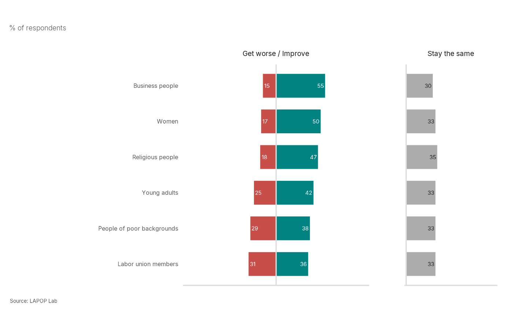

LAPOP Split Bar Graph
lapop_splitbar.RdThis function creates paired-diverging split bar graphs using LAPOP formatting. The positive and negative responses share a center line, while the neutral response is displayed in a separate panel.
Usage
lapop_splitbar(
data,
item = data$item,
response = data$response,
outcome_var = data$prop,
ymin = 0,
ymax = 100,
lang = "en",
main_title = "",
source_info = "LAPOP",
subtitle = "",
improve_level = "Improve",
worsen_level = "Get worse",
neutral_level = "Mostly stay the same",
sort = "hi-lo",
diverging_panel_label = NULL,
neutral_panel_label = NULL,
color_scheme = c(improve = "#008381", worsen = "#C74E49", neutral = "#ACACAC"),
label_size = 4,
bar_width = 0.68
)
lapop_butterfly(
data,
item = data$item,
response = data$response,
outcome_var = data$prop,
ymin = 0,
ymax = 100,
lang = "en",
main_title = "",
source_info = "LAPOP",
subtitle = "",
improve_level = "Improve",
worsen_level = "Get worse",
neutral_level = "Mostly stay the same",
sort = "hi-lo",
diverging_panel_label = NULL,
neutral_panel_label = NULL,
color_scheme = c(improve = "#008381", worsen = "#C74E49", neutral = "#ACACAC"),
label_size = 4,
bar_width = 0.68
)Arguments
- data
Data frame containing one row per item-response combination.
- item, response, outcome_var
Plot components. Defaults use the `item`, `response`, and `prop` columns in `data`.
- ymin, ymax
Numeric. Minimum and maximum percentage values shown. Defaults are 0 and 100.
- lang
Character. Language used for default labels and source text. Options are `"en"`, `"es"`, and `"fr"`.
- main_title
Character. Plot title.
- source_info
Character. Source information. The default `"LAPOP"` prints the localized LAPOP Lab source line.
- subtitle
Character. Plot subtitle.
- improve_level, worsen_level, neutral_level
Character. Response labels treated as the positive, negative, and neutral categories.
- sort
Character. Sorting method: `"hi-lo"` sorts by the positive response from highest to lowest, `"lo-hi"` reverses it, `"worsen"` sorts by the negative response, and `""` preserves the item order.
- diverging_panel_label, neutral_panel_label
Character or `NULL`. Panel labels. `NULL` uses language-specific defaults.
- color_scheme
Character vector of three colors for the positive, negative, and neutral responses. It may be named `improve`, `worsen`, and `neutral`.
- label_size
Numeric. Size of the percentage labels.
- bar_width
Numeric. Width of the bars.
Author
Robert Vidigal, robert.vidigal@vanderbilt.edu
Examples
repdem_plot <- data.frame(
item = c(
"Women", "Women", "Women",
"Young adults", "Young adults", "Young adults",
"People of poor backgrounds", "People of poor backgrounds",
"People of poor backgrounds",
"Business people", "Business people", "Business people",
"Religious people", "Religious people", "Religious people",
"Labor union members", "Labor union members", "Labor union members"
),
response = rep(
c("Improve", "Get worse", "Mostly stay the same"),
times = 6
),
prop = c(
50, 17, 33, 42, 25, 33, 38, 29, 33,
55, 15, 30, 47, 18, 35, 36, 31, 33
)
)
lapop_splitbar(repdem_plot, subtitle = "% of respondents")
